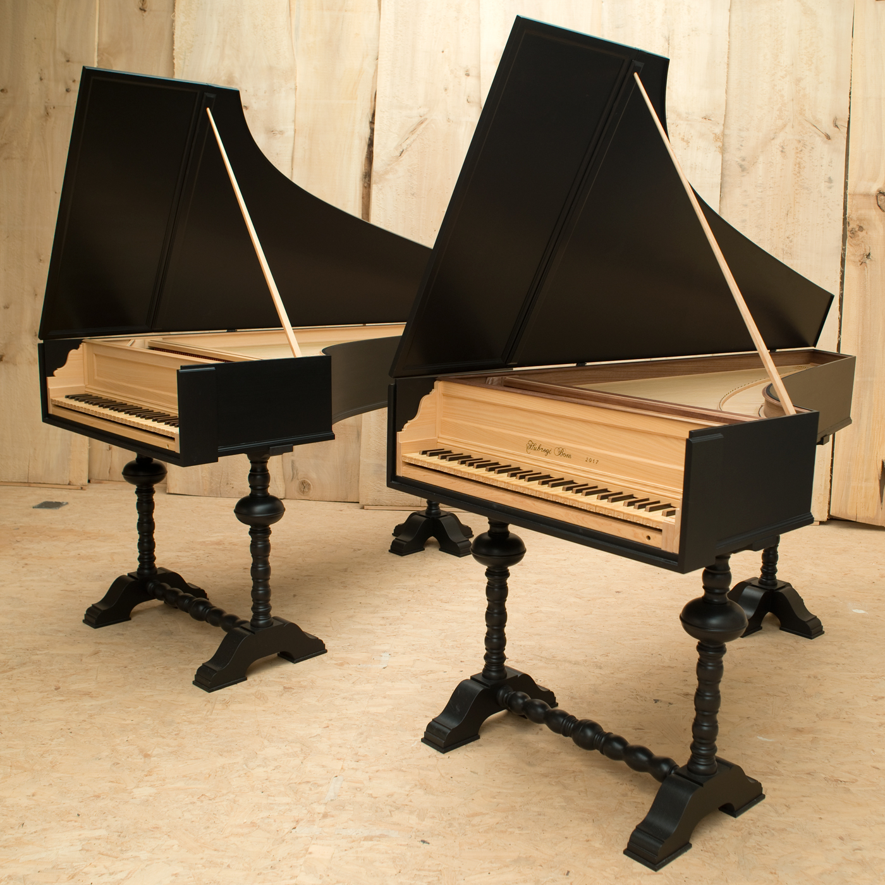

Ik ben Jorre Van Gorp en maak deze website met als onderwerp Klavecimbels. Ikzelf ben een klavierbouwer in opleiding op de school CMB, (Centrum voor Muziekinstrumenten Bouw) te Puurs. Hier leer ik meer over de opbouw van klavecimbels en de juiste technieken. Ik bespeel zelf ook het klavecimbel waardoor ik interesse kreeg in de opbouw van het instrument. Intussen is dit een uit de hand gelopen hobby geworden om in mijn vrije tijd klavecimbels te bouwen. Door deze interesse heb ik ervoor gekozen om een website te maken over dit onderwerp.
Het klavecimbel is een muziekinstrument dat geluid produceert door snaren met veer of plectra te tokkelen wanneer de speler de toetsen indrukt. Het is een toetsinstrument dat qua uiterlijk lijkt op een piano, maar het werkt anders. Het klavecimbel was een populair instrument tijdens de barokperiode (17e en 18e eeuw) en speelde een belangrijke rol in de muziek van die tijd. Het klavecimbel heeft een kenmerkende, heldere en heldere klank. Het kan een of meer toetsenbordmanualen (toetsensets) hebben en een reeks registers of registers die de toon kunnen wijzigen. De speler selecteert verschillende registers om het timbre of de toon van het instrument te veranderen, waardoor het geschikt is voor verschillende muziekstijlen en composities. componisten als Johann Sebastian Bach, Domenico Scarlatti en vele anderen schreven muziek speciaal voor het klavecimbel. Hoewel het in de 19e eeuw grotendeels werd vervangen door de piano, heeft het klavecimbel in de 20e eeuw een heropleving beleefd en wordt het nog steeds gebruikt in historische uitvoeringen en door muzikanten die gespecialiseerd zijn in oude muziek.